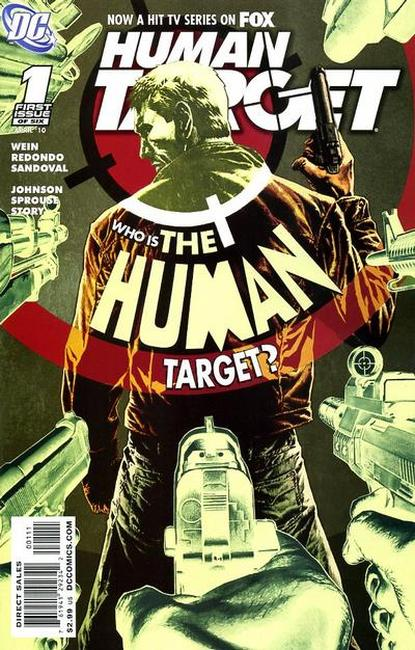

The Human Target is the name of two fictional characters appearing in American comic books published by DC Comics. The first is Fred Venable, who appears in Detective Comics #201 (November 1953), by Edmond Hamilton and Sheldon Moldoff.
The second, Christopher Chance, first appears in Action Comics #419 (December 1972), and was created by Len Wein and Carmine Infantino. This character, a private investigator and bodyguard who assumes the identities of clients targeted by assassins and other dangerous criminals, has appeared in numerous books published throughout the decades, and has appeared in television adaptations.

Human Target debuted on CTV and FOX in January 2010. Fox renewed the show for a second season in May 2010. The show was officially canceled on May 10, 2011 after two seasons.